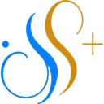

DIAGNOSEPluginなしで診断
Windows / Mac別の読取専用コマンド。

Lark Agent Bridge SFL · Setup & Operations PluginSFL · v0.2.9
Claude CodeとCodexを、Larkのチャットから安全に操作するための導入プラグインです。 Pluginを入れる前にOS別の読取専用コマンドで状態を確認します。結果確認後、必要な場合だけPluginを追加し、セットアップSkillでLark公式CLIとBridgeをQR登録できます。
Windows / Mac別の読取専用コマンド。
診断結果を確認してから導入。
Lark公式CLI、Bridgeの順に整える。
HOW IT WORKS
コードとエージェントの実行環境はPC側に残り、BridgeがLarkとのメッセージを中継します。
LARK DEVELOPER
推奨ルートでは、Lark公式Node SDKの一括アプリ登録を使います。Developer Consoleで最初から App ID・権限・イベントを一つずつ設定する流れではありません。
PCのターミナルまたはローカル管理画面に、期限付きQRコードを表示します。
サインイン済みのLarkでPersonalAgentの作成・利用を確認し、本人が承認します。
OAuth 2.0 Device Authorization Grantを使い、Larkがアプリを作成して認証情報を返します。
App Secretは会話へ表示せず、プロファイル単位の暗号化ストアへ保存します。
長接続でLarkに接続し、LarkのBotへ /status を送って完了です。
Lark Developer Consoleで管理中のアプリを使えます。Bot機能、利用範囲、必要な権限とイベントが有効であることを確認します。
初期設定時に既存のApp IDを選択します。Lark国際版ではtenantをLarkに設定します。
共有画面やシェル履歴に残さないため、App Secretは非表示の対話プロンプトで入力します。
full は自動選択しないINSTALL
Pluginを追加する前に、Windows PowerShellまたはMac Terminal用の診断専用コマンドを実行します。
1. Windows PowerShellで診断$p=Join-Path $env:TEMP 'sfl-lark-diagnose-0.2.9.ps1'; Invoke-WebRequest -UseBasicParsing 'https://sfl-lark-ai-bridge-guide.pages.dev/downloads/diagnose-windows.ps1' -OutFile $p; try { if ((Get-FileHash -LiteralPath $p -Algorithm SHA256).Hash.ToLowerInvariant() -ne 'c138123fc703bd31b5283f8fac1c70bf7e676f3bb3f03bd71452c0fe93c2c274') { throw 'SHA-256検証失敗' }; & ([scriptblock]::Create([IO.File]::ReadAllText($p,[Text.Encoding]::UTF8))) } finally { Remove-Item -LiteralPath $p -Force -ErrorAction SilentlyContinue }
1. Mac Terminalで診断p="$(mktemp "${TMPDIR:-/tmp}/sfl-lark-diagnose.XXXXXX")"; trap 'rm -f "$p"' EXIT; curl -fsSL 'https://sfl-lark-ai-bridge-guide.pages.dev/downloads/diagnose-macos.sh' -o "$p"; printf '%s %s\n' 'a66ba902d60ca08853b9105d9c2cd9e9d1e0a1d237c650dfcac044f022c9c255' "$p" | shasum -a 256 -c - && bash "$p"
$p=Join-Path $env:TEMP 'sfl-lark-foundation-0.2.9.ps1'; Invoke-WebRequest -UseBasicParsing 'https://sfl-lark-ai-bridge-guide.pages.dev/install/lark-foundation-windows.ps1' -OutFile $p; try { if ((Get-FileHash -LiteralPath $p -Algorithm SHA256).Hash.ToLowerInvariant() -ne 'c88b2a3d50a80e9fc959a2d22254b20e9c1bab083753262ce0ae451ca7de1469') { throw 'SHA-256検証失敗' }; & ([scriptblock]::Create([IO.File]::ReadAllText($p,[Text.Encoding]::UTF8))) } finally { Remove-Item -LiteralPath $p -Force -ErrorAction SilentlyContinue }2. MacでPluginを追加する場合p="$(mktemp "${TMPDIR:-/tmp}/sfl-lark-foundation.XXXXXX")"; trap 'rm -f "$p"' EXIT; curl -fsSL 'https://sfl-lark-ai-bridge-guide.pages.dev/install/lark-foundation-macos.sh' -o "$p"; printf '%s %s\n' '98c865e849e6ce3a23ab311d582abe70d0948ce292af13f001002a942d0e530f' "$p" | shasum -a 256 -c - && bash "$p"
3. 診断後、不足がある場合だけcodex '$lark-setup 診断結果をもとに、Lark公式CLIとBridgeの不足分だけを設定してください。'
4. Plugin導入後の再診断だけcodex '$lark-diagnose このPCのLark接続環境を変更せず再診断してください。導入や修復は行わないでください。'
1. Windows PowerShellで診断$p=Join-Path $env:TEMP 'sfl-lark-diagnose-0.2.9.ps1'; Invoke-WebRequest -UseBasicParsing 'https://sfl-lark-ai-bridge-guide.pages.dev/downloads/diagnose-windows.ps1' -OutFile $p; try { if ((Get-FileHash -LiteralPath $p -Algorithm SHA256).Hash.ToLowerInvariant() -ne 'c138123fc703bd31b5283f8fac1c70bf7e676f3bb3f03bd71452c0fe93c2c274') { throw 'SHA-256検証失敗' }; & ([scriptblock]::Create([IO.File]::ReadAllText($p,[Text.Encoding]::UTF8))) } finally { Remove-Item -LiteralPath $p -Force -ErrorAction SilentlyContinue }
1. Mac Terminalで診断p="$(mktemp "${TMPDIR:-/tmp}/sfl-lark-diagnose.XXXXXX")"; trap 'rm -f "$p"' EXIT; curl -fsSL 'https://sfl-lark-ai-bridge-guide.pages.dev/downloads/diagnose-macos.sh' -o "$p"; printf '%s %s\n' 'a66ba902d60ca08853b9105d9c2cd9e9d1e0a1d237c650dfcac044f022c9c255' "$p" | shasum -a 256 -c - && bash "$p"
$p=Join-Path $env:TEMP 'sfl-lark-foundation-0.2.9.ps1'; Invoke-WebRequest -UseBasicParsing 'https://sfl-lark-ai-bridge-guide.pages.dev/install/lark-foundation-windows.ps1' -OutFile $p; try { if ((Get-FileHash -LiteralPath $p -Algorithm SHA256).Hash.ToLowerInvariant() -ne 'c88b2a3d50a80e9fc959a2d22254b20e9c1bab083753262ce0ae451ca7de1469') { throw 'SHA-256検証失敗' }; & ([scriptblock]::Create([IO.File]::ReadAllText($p,[Text.Encoding]::UTF8))) } finally { Remove-Item -LiteralPath $p -Force -ErrorAction SilentlyContinue }2. MacでPluginを追加する場合p="$(mktemp "${TMPDIR:-/tmp}/sfl-lark-foundation.XXXXXX")"; trap 'rm -f "$p"' EXIT; curl -fsSL 'https://sfl-lark-ai-bridge-guide.pages.dev/install/lark-foundation-macos.sh' -o "$p"; printf '%s %s\n' '98c865e849e6ce3a23ab311d582abe70d0948ce292af13f001002a942d0e530f' "$p" | shasum -a 256 -c - && bash "$p"
3. 診断後、必要な場合だけ/lark-setup 診断結果をもとに、Lark公式CLIとBridgeの不足分だけを設定してください
4. Plugin導入後の再診断だけ/lark-diagnose このPCのLark接続環境を変更せず再診断してください。導入や修復は行わないでください
lark-diagnose環境を読むだけ。導入・修復・起動・認証は行いません。
lark-setup診断結果の後、公式CLI、QR登録、Bridge、疎通確認まで。
lark-bridge-doctor既存Bridgeの接続と構成を点検。
lark-bridge-agent-config権限、workspace、継続ルールを管理。
lark-bridge-update稼働状態と秘密情報を維持して更新。
SECURITY BY DEFAULT
便利さより先に、誰が・どこまで・何を実行できるかを固定します。
新規Botは作成者だけが利用可能。他ユーザーは明示的に招待します。
既定は指定workspace内だけを編集。PC全体へのアクセスは許可しません。
App Secretをリポジトリ、設定プリセット、会話ログへ含めません。
更新前に停止していたプロファイルを、更新後に勝手に起動しません。
FAQ
推奨のQR登録では、最初からDeveloper Consoleでアプリを手作りする必要はありません。既存アプリを流用する場合や、通常より広い追加機能を有効にする場合だけLark側の管理が必要です。
製品本体のSystem / Developerメッセージは外部から置換しません。代わりにClaude Codeの CLAUDE.md、Codexの AGENTS.md へBridge専用の管理ブロックを追加します。既存の手書き部分は維持されます。
いいえ。初期状態ではアプリ作成者だけが利用できます。チームメンバーやグループを開放するときは、Lark内の /invite を使って明示的に追加します。
BridgeとAIエージェントはローカルPCで動くため、PCが起動しネットワークに接続されている必要があります。公開サーバー上へコードを送る構成ではありません。
通常は不要です。BridgeはLarkのWebSocket長接続を利用するため、固定IP、公開ドメイン、SSL証明書を準備せずに開始できます。
保存されません。SecretはリポジトリやSkillへ含めず、ローカルのプロファイル用ストアへ暗号化して保持します。既存アプリを使う場合も、コマンド引数やチャットへ貼り付けず対話入力します。
READY TO CONNECT?
導入、診断、権限設定、更新まで。チームで再利用できる形にまとめました。